Note
Go to the end to download the full example code.
Synthetic Results#
import os
import numpy as np
import polars as pl
from mirage.papers import plot_case_results
f = '/Users/liamrobinson/Documents/maintained-research/mirage/examples/15-attitude-sdc-2025/data/'
df_in = pl.read_parquet(os.path.join(f, 'rocket_body_sdc_input.parquet'))
df_out = pl.read_parquet(os.path.join(f, 'rocket_body_out_final.parquet')).sort('fun')
df_out_prior = pl.read_parquet(
os.path.join(f, 'rocket_body_out_prior_final.parquet')
).sort('fun')
t_max = df_in['epsecs'][-1]
for c in ['x0', 'xk']:
x = df_out[c].to_numpy().copy()
x[:, 3:6] /= t_max
df_out = df_out.with_columns(pl.Series(name=c, values=x))
for c in ['x0', 'xk']:
x = df_out_prior[c].to_numpy().copy()
x[:, 3:6] /= t_max
df_out_prior = df_out_prior.with_columns(pl.Series(name=c, values=x))
print(
'max search omega in deg/s',
np.rad2deg(
np.linalg.norm(df_out['x0'].to_numpy()[:, 3:6], axis=1, keepdims=True).max()
),
)
plot_case_results(
df_in,
df_out,
trial_name='Rocket Body',
conv_bound=1 / 2,
n=30, # not necessary
cmap='viridis',
s_p_range=(-1, 5),
s_p_bins=50,
plot_harmonic_s_p_lines=False,
selection_method='likelihood',
color_sigma_error=False,
write_gifs=True,
)
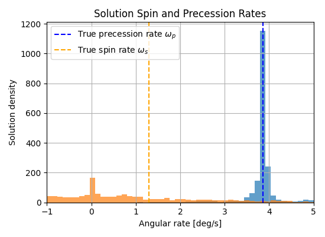
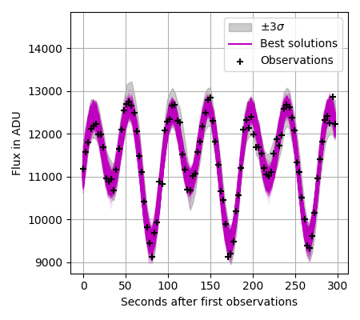
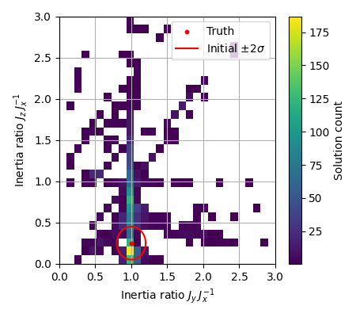
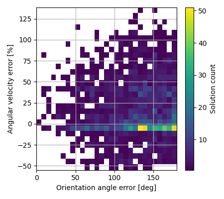
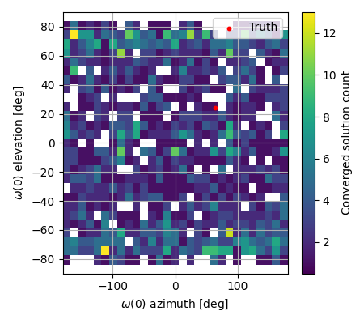
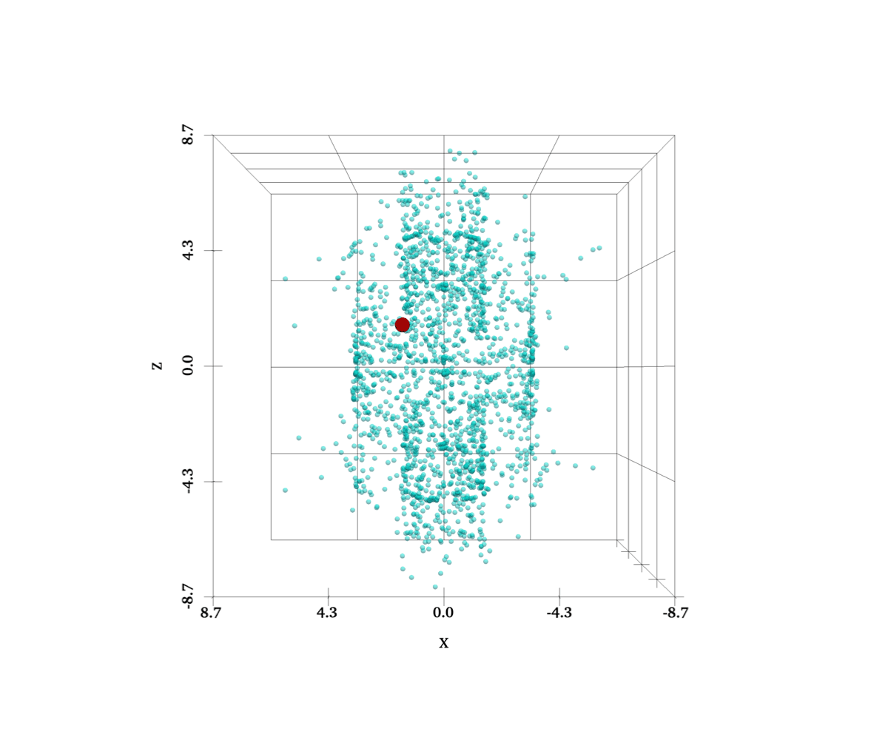
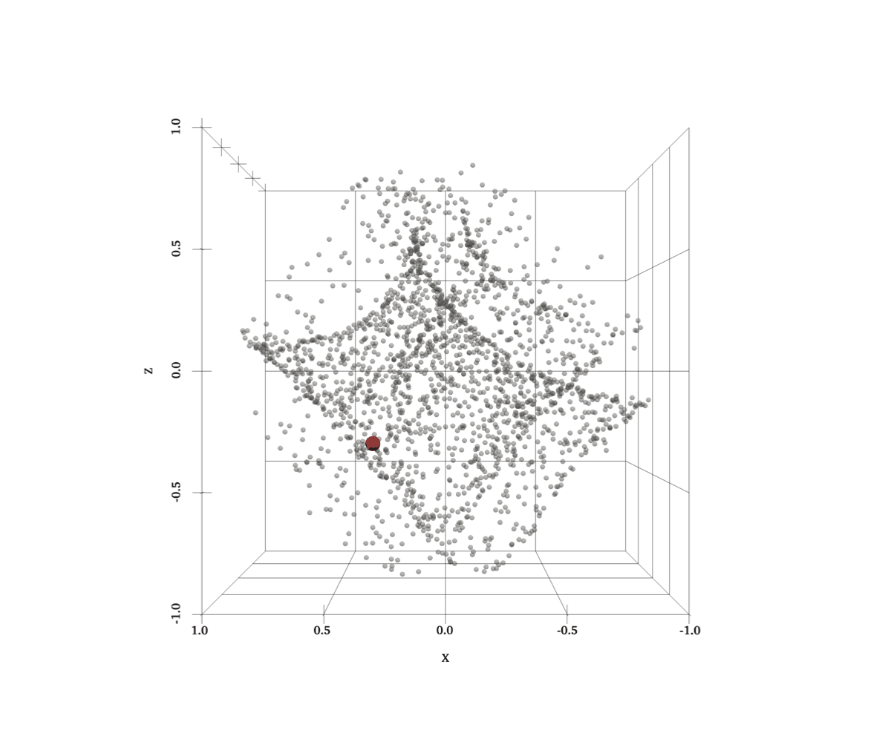
max search omega in deg/s 8.420725453323703
shape: (100_000, 11)
┌───────┬─────────────┬──────────────┬──────────────┬───┬───────┬──────────────┬──────────────┬─────────────┐
│ index ┆ fun ┆ xk ┆ x0 ┆ … ┆ geval ┆ gradient ┆ hessian_inve ┆ lcs │
│ --- ┆ --- ┆ --- ┆ --- ┆ ┆ --- ┆ --- ┆ rse ┆ --- │
│ u32 ┆ f64 ┆ array[f64, ┆ array[f64, ┆ ┆ i32 ┆ array[f64, ┆ --- ┆ array[f64, │
│ ┆ ┆ 8] ┆ 8] ┆ ┆ ┆ 8] ┆ array[f64, ┆ 100] │
│ ┆ ┆ ┆ ┆ ┆ ┆ ┆ (8, 8)] ┆ │
╞═══════╪═════════════╪══════════════╪══════════════╪═══╪═══════╪══════════════╪══════════════╪═════════════╡
│ 17036 ┆ -1.935998 ┆ [-1.920953, ┆ [-0.413386, ┆ … ┆ 69 ┆ [-0.004476, ┆ [[5.713927, ┆ [37.639775, │
│ ┆ ┆ -4.681455, … ┆ -0.75601, … ┆ ┆ ┆ 0.002361, … ┆ -1.400911, … ┆ 39.175315, │
│ ┆ ┆ 12.24… ┆ 0.2497… ┆ ┆ ┆ 0.1912… ┆ 1.560… ┆ … 41.36… │
│ 12842 ┆ -1.903337 ┆ [-0.5207, ┆ [0.40571, ┆ … ┆ 112 ┆ [0.487398, ┆ [[0.023067, ┆ [38.572993, │
│ ┆ ┆ -0.216089, … ┆ 0.061624, … ┆ ┆ ┆ 0.067457, … ┆ -0.064657, … ┆ 40.038733, │
│ ┆ ┆ 12.2435… ┆ 0.212857… ┆ ┆ ┆ -0.1355… ┆ -0.13… ┆ … 42.55… │
│ 67012 ┆ -1.8985 ┆ [0.381587, ┆ [0.124564, ┆ … ┆ 103 ┆ [-1.261298, ┆ [[0.00067, ┆ [39.019145, │
│ ┆ ┆ -0.263572, … ┆ -0.327926, … ┆ ┆ ┆ -1.44139, … ┆ -0.000671, … ┆ 40.734259, │
│ ┆ ┆ 1.0960… ┆ 0.2067… ┆ ┆ ┆ 5.9102… ┆ -0.000… ┆ … 43.27… │
│ 63546 ┆ -1.89842 ┆ [-0.177941, ┆ [0.197352, ┆ … ┆ 70 ┆ [0.429226, ┆ [[0.003001, ┆ [39.157542, │
│ ┆ ┆ -0.84176, … ┆ -0.748072, … ┆ ┆ ┆ -0.831464, … ┆ 0.000257, … ┆ 40.99671, … │
│ ┆ ┆ -2.226… ┆ 0.0557… ┆ ┆ ┆ -7.900… ┆ -0.006… ┆ 43.405… │
│ 518 ┆ -1.88881 ┆ [-0.157511, ┆ [-0.027046, ┆ … ┆ 74 ┆ [-0.585659, ┆ [[0.007739, ┆ [38.329587, │
│ ┆ ┆ -1.360584, … ┆ 0.330288, … ┆ ┆ ┆ 0.073747, … ┆ -0.012816, … ┆ 40.067526, │
│ ┆ ┆ 1.962… ┆ 0.3462… ┆ ┆ ┆ -4.964… ┆ 0.000… ┆ … 42.07… │
│ … ┆ … ┆ … ┆ … ┆ … ┆ … ┆ … ┆ … ┆ … │
│ 23124 ┆ 5222.240689 ┆ [-0.990054, ┆ [0.01258, ┆ … ┆ 26 ┆ [4.686674, ┆ [[0.240293, ┆ [45.133066, │
│ ┆ ┆ 1.330925, … ┆ -0.4067, … ┆ ┆ ┆ -4.632955, … ┆ -0.084193, … ┆ 44.717653, │
│ ┆ ┆ -0.248… ┆ 0.417214] ┆ ┆ ┆ -0.331… ┆ -0.05… ┆ … 45.47… │
│ 24240 ┆ 5222.374415 ┆ [0.375526, ┆ [0.343703, ┆ … ┆ 12 ┆ [-0.66683, ┆ [[0.616391, ┆ [45.586981, │
│ ┆ ┆ 0.593587, … ┆ -0.567937, … ┆ ┆ ┆ 2.454896, … ┆ -0.358544, … ┆ 42.601534, │
│ ┆ ┆ 2.03646… ┆ 0.3404… ┆ ┆ ┆ -1.1800… ┆ 0.237… ┆ … 43.05… │
│ 4320 ┆ 5239.73916 ┆ [-0.214888, ┆ [-0.378609, ┆ … ┆ 11 ┆ [-56.944148, ┆ [[0.95284, ┆ [43.855454, │
│ ┆ ┆ -0.696708, … ┆ -0.122419, … ┆ ┆ ┆ 414.081564, ┆ 0.117787, … ┆ 44.544695, │
│ ┆ ┆ 0.864… ┆ 0.400… ┆ ┆ ┆ … -35… ┆ -0.0914… ┆ … 39.69… │
│ 94679 ┆ 5359.738914 ┆ [-0.436977, ┆ [-0.261942, ┆ … ┆ 14 ┆ [-55.951525, ┆ [[0.060049, ┆ [42.643907, │
│ ┆ ┆ -1.001838, … ┆ -0.690749, … ┆ ┆ ┆ -16.221159, ┆ -0.042105, … ┆ 42.187779, │
│ ┆ ┆ -0.17… ┆ 0.340… ┆ ┆ ┆ … -1.… ┆ 0.184… ┆ … 43.44… │
│ 18351 ┆ 5457.345899 ┆ [2.446858, ┆ [-0.022234, ┆ … ┆ 15 ┆ [6.280713, ┆ [[0.754907, ┆ [28.858862, │
│ ┆ ┆ 2.177739, … ┆ -0.240395, … ┆ ┆ ┆ 4.179034, … ┆ -0.239998, … ┆ 28.733669, │
│ ┆ ┆ 0.97614… ┆ 0.098… ┆ ┆ ┆ 98.8267… ┆ -0.08… ┆ … 28.41… │
└───────┴─────────────┴──────────────┴──────────────┴───┴───────┴──────────────┴──────────────┴─────────────┘
shape: (2_026, 11)
┌───────┬───────────┬───────────────┬──────────────┬───┬───────┬──────────────┬──────────────┬──────────────┐
│ index ┆ fun ┆ xk ┆ x0 ┆ … ┆ geval ┆ gradient ┆ hessian_inve ┆ lcs │
│ --- ┆ --- ┆ --- ┆ --- ┆ ┆ --- ┆ --- ┆ rse ┆ --- │
│ u32 ┆ f64 ┆ array[f64, 8] ┆ array[f64, ┆ ┆ i32 ┆ array[f64, ┆ --- ┆ array[f64, │
│ ┆ ┆ ┆ 8] ┆ ┆ ┆ 8] ┆ array[f64, ┆ 100] │
│ ┆ ┆ ┆ ┆ ┆ ┆ ┆ (8, 8)] ┆ │
╞═══════╪═══════════╪═══════════════╪══════════════╪═══╪═══════╪══════════════╪══════════════╪══════════════╡
│ 17036 ┆ -1.935998 ┆ [-1.920953, ┆ [-0.413386, ┆ … ┆ 69 ┆ [-0.004476, ┆ [[5.713927, ┆ [37.639775, │
│ ┆ ┆ -4.681455, … ┆ -0.75601, … ┆ ┆ ┆ 0.002361, … ┆ -1.400911, … ┆ 39.175315, … │
│ ┆ ┆ 12.24… ┆ 0.2497… ┆ ┆ ┆ 0.1912… ┆ 1.560… ┆ 41.36… │
│ 12842 ┆ -1.903337 ┆ [-0.5207, ┆ [0.40571, ┆ … ┆ 112 ┆ [0.487398, ┆ [[0.023067, ┆ [38.572993, │
│ ┆ ┆ -0.216089, … ┆ 0.061624, … ┆ ┆ ┆ 0.067457, … ┆ -0.064657, … ┆ 40.038733, … │
│ ┆ ┆ 12.2435… ┆ 0.212857… ┆ ┆ ┆ -0.1355… ┆ -0.13… ┆ 42.55… │
│ 67012 ┆ -1.8985 ┆ [0.381587, ┆ [0.124564, ┆ … ┆ 103 ┆ [-1.261298, ┆ [[0.00067, ┆ [39.019145, │
│ ┆ ┆ -0.263572, … ┆ -0.327926, … ┆ ┆ ┆ -1.44139, … ┆ -0.000671, … ┆ 40.734259, … │
│ ┆ ┆ 1.0960… ┆ 0.2067… ┆ ┆ ┆ 5.9102… ┆ -0.000… ┆ 43.27… │
│ 63546 ┆ -1.89842 ┆ [-0.177941, ┆ [0.197352, ┆ … ┆ 70 ┆ [0.429226, ┆ [[0.003001, ┆ [39.157542, │
│ ┆ ┆ -0.84176, … ┆ -0.748072, … ┆ ┆ ┆ -0.831464, … ┆ 0.000257, … ┆ 40.99671, … │
│ ┆ ┆ -2.226… ┆ 0.0557… ┆ ┆ ┆ -7.900… ┆ -0.006… ┆ 43.405… │
│ 518 ┆ -1.88881 ┆ [-0.157511, ┆ [-0.027046, ┆ … ┆ 74 ┆ [-0.585659, ┆ [[0.007739, ┆ [38.329587, │
│ ┆ ┆ -1.360584, … ┆ 0.330288, … ┆ ┆ ┆ 0.073747, … ┆ -0.012816, … ┆ 40.067526, … │
│ ┆ ┆ 1.962… ┆ 0.3462… ┆ ┆ ┆ -4.964… ┆ 0.000… ┆ 42.07… │
│ … ┆ … ┆ … ┆ … ┆ … ┆ … ┆ … ┆ … ┆ … │
│ 37951 ┆ -1.245437 ┆ [-0.103669, ┆ [-0.318403, ┆ … ┆ 45 ┆ [3.595644, ┆ [[0.000001, ┆ [39.141382, │
│ ┆ ┆ 0.130636, … ┆ 0.26255, … ┆ ┆ ┆ -0.284126, … ┆ 2.4337e-7, … ┆ 40.923681, … │
│ ┆ ┆ 0.1805… ┆ 0.25399… ┆ ┆ ┆ 0.7381… ┆ -0.00… ┆ 43.99… │
│ 41077 ┆ -1.24416 ┆ [-0.574504, ┆ [-0.153851, ┆ … ┆ 53 ┆ [-1.165789, ┆ [[0.006232, ┆ [39.687642, │
│ ┆ ┆ -0.10166, … ┆ 0.086164, … ┆ ┆ ┆ 1.101895, … ┆ 0.000266, … ┆ 41.564363, … │
│ ┆ ┆ 0.1159… ┆ 0.3421… ┆ ┆ ┆ -6.026… ┆ 0.0025… ┆ 44.70… │
│ 77653 ┆ -1.243966 ┆ [0.138288, ┆ [-0.061134, ┆ … ┆ 33 ┆ [20.462516, ┆ [[0.004007, ┆ [40.668353, │
│ ┆ ┆ -1.269967, … ┆ -0.544287, … ┆ ┆ ┆ 10.0291, … ┆ 0.001594, … ┆ 42.942796, … │
│ ┆ ┆ 0.0720… ┆ 0.156… ┆ ┆ ┆ 15.4507… ┆ 0.0028… ┆ 44.41… │
│ 32228 ┆ -1.243943 ┆ [0.042692, ┆ [-0.096635, ┆ … ┆ 65 ┆ [5.097678, ┆ [[0.000089, ┆ [39.003117, │
│ ┆ ┆ -0.159437, … ┆ -0.110901, … ┆ ┆ ┆ 9.771168, … ┆ 0.000046, … ┆ 41.525287, … │
│ ┆ ┆ 0.7673… ┆ 0.149… ┆ ┆ ┆ -11.835… ┆ -0.000… ┆ 44.25… │
│ 5538 ┆ -1.242949 ┆ [-0.340711, ┆ [-0.039019, ┆ … ┆ 67 ┆ [1.385143, ┆ [[0.000001, ┆ [39.080566, │
│ ┆ ┆ 1.213727, … ┆ 0.119846, … ┆ ┆ ┆ 0.124825, … ┆ -5.8517e-7, ┆ 41.084718, … │
│ ┆ ┆ -1.582… ┆ 0.2521… ┆ ┆ ┆ -4.0362… ┆ … 5.70… ┆ 43.91… │
└───────┴───────────┴───────────────┴──────────────┴───┴───────┴──────────────┴──────────────┴──────────────┘
Mean angle error in deg: 126.25
Median precession rate error: 0.34%
Median spin rate error: -99.90%
f_best: -2.72
Best and median loss values of converged solutions: -0.02, -0.01
Median itensor sols [1.00108635 0.57336963] ([1.08634595e-01 1.29347851e+02]% error)
Distance traveled (5th, 50th, 95th percentiles): [0.14415537 1.05907069 2.81041455]
Median iterations: 9.0
Number of converged solutions: 2026
Number of overfit solutions: 0
Median angular velocity magnitude error: 15.47%
wtf
And results for the good prior guess
plot_case_results(
df_in,
df_out_prior,
trial_name='Rocket Body Prior',
conv_bound=1 / 2,
# n=30,
cmap='viridis',
s_p_range=(-1, 5),
s_p_bins=50,
plot_harmonic_s_p_lines=False,
selection_method='likelihood',
color_sigma_error=False,
write_gifs=True,
)
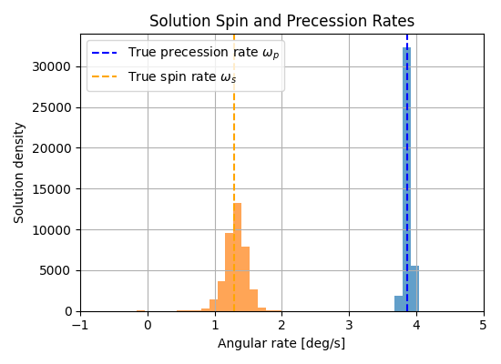
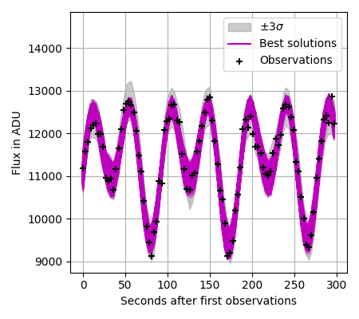
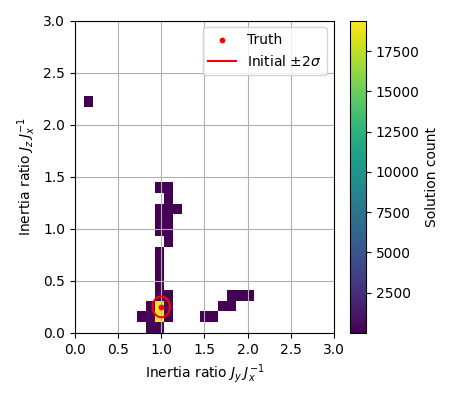
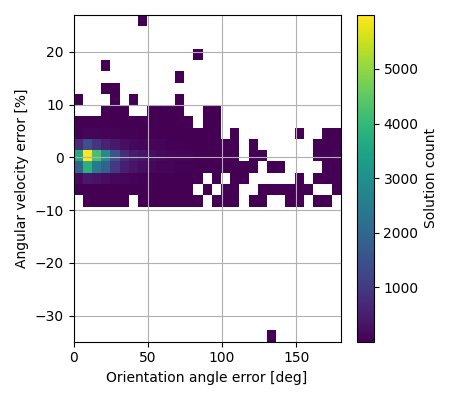
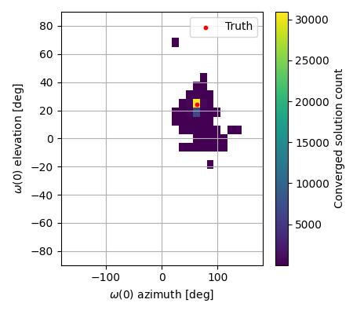
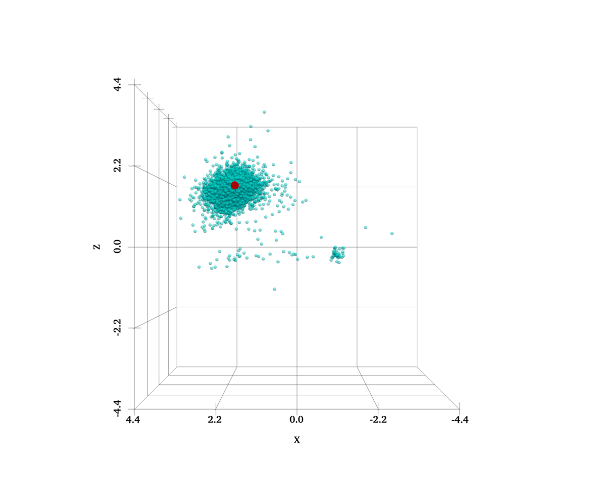
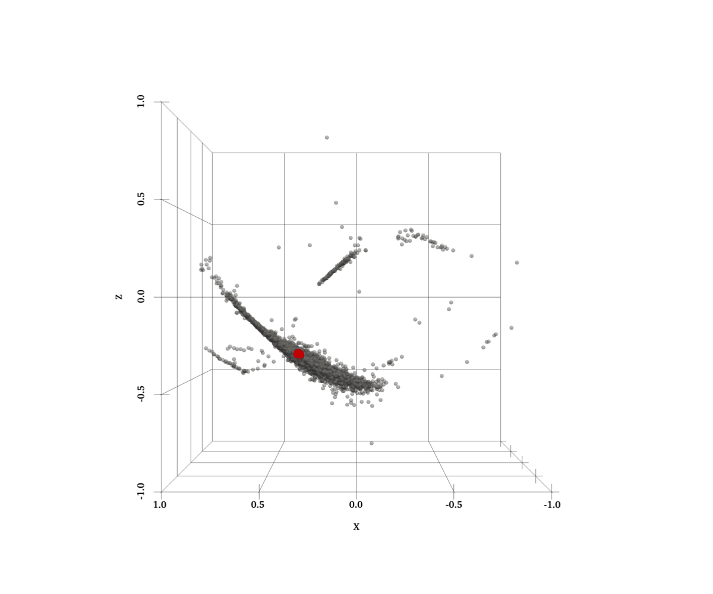
shape: (100_000, 11)
┌───────┬─────────────┬──────────────┬──────────────┬───┬───────┬──────────────┬──────────────┬─────────────┐
│ index ┆ fun ┆ xk ┆ x0 ┆ … ┆ geval ┆ gradient ┆ hessian_inve ┆ lcs │
│ --- ┆ --- ┆ --- ┆ --- ┆ ┆ --- ┆ --- ┆ rse ┆ --- │
│ u32 ┆ f64 ┆ array[f64, ┆ array[f64, ┆ ┆ i32 ┆ array[f64, ┆ --- ┆ array[f64, │
│ ┆ ┆ 8] ┆ 8] ┆ ┆ ┆ 8] ┆ array[f64, ┆ 100] │
│ ┆ ┆ ┆ ┆ ┆ ┆ ┆ (8, 8)] ┆ │
╞═══════╪═════════════╪══════════════╪══════════════╪═══╪═══════╪══════════════╪══════════════╪═════════════╡
│ 22510 ┆ -1.775042 ┆ [0.684381, ┆ [0.39297, ┆ … ┆ 59 ┆ [-2.817515, ┆ [[0.020417, ┆ [39.571454, │
│ ┆ ┆ -0.960022, … ┆ 0.529808, … ┆ ┆ ┆ -3.739048, … ┆ -0.012286, … ┆ 41.498978, │
│ ┆ ┆ 0.1161… ┆ 0.485833… ┆ ┆ ┆ 2.518… ┆ 0.002… ┆ … 43.57… │
│ 74158 ┆ -1.739109 ┆ [0.057891, ┆ [0.317584, ┆ … ┆ 41 ┆ [2.906346, ┆ [[0.0002, ┆ [39.559477, │
│ ┆ ┆ -0.253579, … ┆ 0.33345, … ┆ ┆ ┆ -1.323896, … ┆ 0.000151, … ┆ 41.554786, │
│ ┆ ┆ 0.1212… ┆ 0.168302… ┆ ┆ ┆ 4.3448… ┆ 0.000283… ┆ … 43.50… │
│ 69115 ┆ -1.715594 ┆ [0.327818, ┆ [0.37079, ┆ … ┆ 43 ┆ [0.800716, ┆ [[0.003768, ┆ [39.935516, │
│ ┆ ┆ 0.306657, … ┆ 0.317633, … ┆ ┆ ┆ -1.384988, … ┆ 0.001752, … ┆ 41.946371, │
│ ┆ ┆ 0.25820… ┆ 0.332054… ┆ ┆ ┆ -0.900… ┆ 0.0005… ┆ … 44.49… │
│ 55424 ┆ -1.710664 ┆ [0.061085, ┆ [0.283903, ┆ … ┆ 56 ┆ [1.902841, ┆ [[0.000874, ┆ [39.538459, │
│ ┆ ┆ -0.257981, … ┆ 0.317086, … ┆ ┆ ┆ 0.323845, … ┆ -0.001067, … ┆ 41.374322, │
│ ┆ ┆ 0.1207… ┆ 0.17540… ┆ ┆ ┆ -1.8160… ┆ 0.000… ┆ … 43.56… │
│ 29391 ┆ -1.709229 ┆ [0.302219, ┆ [0.327222, ┆ … ┆ 45 ┆ [0.11026, ┆ [[0.021814, ┆ [39.976837, │
│ ┆ ┆ 0.299956, … ┆ 0.332531, … ┆ ┆ ┆ -1.119918, … ┆ 0.009975, … ┆ 42.011842, │
│ ┆ ┆ 0.26160… ┆ 0.23148… ┆ ┆ ┆ -0.1180… ┆ 0.0025… ┆ … 44.59… │
│ … ┆ … ┆ … ┆ … ┆ … ┆ … ┆ … ┆ … ┆ … │
│ 51903 ┆ 3421.940496 ┆ [0.789005, ┆ [0.334874, ┆ … ┆ 31 ┆ [-2.573122, ┆ [[0.000579, ┆ [38.056184, │
│ ┆ ┆ 0.312536, … ┆ 0.357487, … ┆ ┆ ┆ -57.756284, ┆ 0.000141, … ┆ 39.802026, │
│ ┆ ┆ 0.38757… ┆ 0.29990… ┆ ┆ ┆ … 11.0… ┆ -0.000… ┆ … 46.02… │
│ 18921 ┆ 3721.743234 ┆ [0.228429, ┆ [0.361197, ┆ … ┆ 19 ┆ [40.109963, ┆ [[0.036416, ┆ [44.807736, │
│ ┆ ┆ -0.036959, … ┆ 0.378168, … ┆ ┆ ┆ 175.109273, ┆ -0.031427, … ┆ 41.96767, … │
│ ┆ ┆ 0.1301… ┆ 0.26642… ┆ ┆ ┆ … -10.… ┆ -0.00… ┆ 43.095… │
│ 26694 ┆ 4348.699792 ┆ [0.350716, ┆ [0.360825, ┆ … ┆ 14 ┆ [122.688867, ┆ [[0.117716, ┆ [42.265579, │
│ ┆ ┆ 0.715386, … ┆ 0.666495, … ┆ ┆ ┆ -774.957986, ┆ 0.027666, … ┆ 40.386095, │
│ ┆ ┆ 0.17885… ┆ 0.21162… ┆ ┆ ┆ … 16… ┆ 0.3467… ┆ … 35.02… │
│ 72957 ┆ 4847.484712 ┆ [0.59261, ┆ [0.297961, ┆ … ┆ 17 ┆ [52.287532, ┆ [[0.6536, ┆ [43.598419, │
│ ┆ ┆ 0.210854, … ┆ 0.488246, … ┆ ┆ ┆ 10.459637, … ┆ 0.279144, … ┆ 42.879945, │
│ ┆ ┆ -0.00846… ┆ 0.23044… ┆ ┆ ┆ -290.… ┆ -0.06221… ┆ … 43.75… │
│ 37595 ┆ 5458.776124 ┆ [0.251734, ┆ [0.214967, ┆ … ┆ 19 ┆ [62.465607, ┆ [[0.708701, ┆ [39.876832, │
│ ┆ ┆ 0.255644, … ┆ 0.329867, … ┆ ┆ ┆ -23.961577, ┆ 0.225666, … ┆ 41.810713, │
│ ┆ ┆ 0.15684… ┆ 0.18454… ┆ ┆ ┆ … 77.7… ┆ -0.042… ┆ … 42.22… │
└───────┴─────────────┴──────────────┴──────────────┴───┴───────┴──────────────┴──────────────┴─────────────┘
shape: (39_683, 11)
┌───────┬───────────┬───────────────┬──────────────┬───┬───────┬──────────────┬──────────────┬──────────────┐
│ index ┆ fun ┆ xk ┆ x0 ┆ … ┆ geval ┆ gradient ┆ hessian_inve ┆ lcs │
│ --- ┆ --- ┆ --- ┆ --- ┆ ┆ --- ┆ --- ┆ rse ┆ --- │
│ u32 ┆ f64 ┆ array[f64, 8] ┆ array[f64, ┆ ┆ i32 ┆ array[f64, ┆ --- ┆ array[f64, │
│ ┆ ┆ ┆ 8] ┆ ┆ ┆ 8] ┆ array[f64, ┆ 100] │
│ ┆ ┆ ┆ ┆ ┆ ┆ ┆ (8, 8)] ┆ │
╞═══════╪═══════════╪═══════════════╪══════════════╪═══╪═══════╪══════════════╪══════════════╪══════════════╡
│ 22510 ┆ -1.775042 ┆ [0.684381, ┆ [0.39297, ┆ … ┆ 59 ┆ [-2.817515, ┆ [[0.020417, ┆ [39.571454, │
│ ┆ ┆ -0.960022, … ┆ 0.529808, … ┆ ┆ ┆ -3.739048, … ┆ -0.012286, … ┆ 41.498978, … │
│ ┆ ┆ 0.1161… ┆ 0.485833… ┆ ┆ ┆ 2.518… ┆ 0.002… ┆ 43.57… │
│ 74158 ┆ -1.739109 ┆ [0.057891, ┆ [0.317584, ┆ … ┆ 41 ┆ [2.906346, ┆ [[0.0002, ┆ [39.559477, │
│ ┆ ┆ -0.253579, … ┆ 0.33345, … ┆ ┆ ┆ -1.323896, … ┆ 0.000151, … ┆ 41.554786, … │
│ ┆ ┆ 0.1212… ┆ 0.168302… ┆ ┆ ┆ 4.3448… ┆ 0.000283… ┆ 43.50… │
│ 69115 ┆ -1.715594 ┆ [0.327818, ┆ [0.37079, ┆ … ┆ 43 ┆ [0.800716, ┆ [[0.003768, ┆ [39.935516, │
│ ┆ ┆ 0.306657, … ┆ 0.317633, … ┆ ┆ ┆ -1.384988, … ┆ 0.001752, … ┆ 41.946371, … │
│ ┆ ┆ 0.25820… ┆ 0.332054… ┆ ┆ ┆ -0.900… ┆ 0.0005… ┆ 44.49… │
│ 55424 ┆ -1.710664 ┆ [0.061085, ┆ [0.283903, ┆ … ┆ 56 ┆ [1.902841, ┆ [[0.000874, ┆ [39.538459, │
│ ┆ ┆ -0.257981, … ┆ 0.317086, … ┆ ┆ ┆ 0.323845, … ┆ -0.001067, … ┆ 41.374322, … │
│ ┆ ┆ 0.1207… ┆ 0.17540… ┆ ┆ ┆ -1.8160… ┆ 0.000… ┆ 43.56… │
│ 29391 ┆ -1.709229 ┆ [0.302219, ┆ [0.327222, ┆ … ┆ 45 ┆ [0.11026, ┆ [[0.021814, ┆ [39.976837, │
│ ┆ ┆ 0.299956, … ┆ 0.332531, … ┆ ┆ ┆ -1.119918, … ┆ 0.009975, … ┆ 42.011842, … │
│ ┆ ┆ 0.26160… ┆ 0.23148… ┆ ┆ ┆ -0.1180… ┆ 0.0025… ┆ 44.59… │
│ … ┆ … ┆ … ┆ … ┆ … ┆ … ┆ … ┆ … ┆ … │
│ 9813 ┆ -1.082066 ┆ [0.553692, ┆ [0.394718, ┆ … ┆ 45 ┆ [-30.589519, ┆ [[0.084096, ┆ [38.773938, │
│ ┆ ┆ 0.39014, … ┆ 0.373424, … ┆ ┆ ┆ 2.473026, … ┆ 0.01108, … ┆ 40.995159, … │
│ ┆ ┆ 0.23185] ┆ 0.29162… ┆ ┆ ┆ -32.4… ┆ -0.1472… ┆ 43.73… │
│ 96493 ┆ -1.082034 ┆ [0.257587, ┆ [0.32014, ┆ … ┆ 56 ┆ [-0.16771, ┆ [[0.001781, ┆ [39.337154, │
│ ┆ ┆ 0.279797, … ┆ 0.272318, … ┆ ┆ ┆ 0.377927, … ┆ -0.000002, … ┆ 41.609516, … │
│ ┆ ┆ 0.26852… ┆ 0.304816… ┆ ┆ ┆ 0.60433… ┆ -0.00… ┆ 44.73… │
│ 28614 ┆ -1.081982 ┆ [0.384395, ┆ [0.336491, ┆ … ┆ 49 ┆ [-1.783391, ┆ [[0.009352, ┆ [40.169185, │
│ ┆ ┆ 0.330048, … ┆ 0.334315, … ┆ ┆ ┆ 1.725635, … ┆ 0.003527, … ┆ 42.06524, … │
│ ┆ ┆ 0.14889… ┆ 0.16189… ┆ ┆ ┆ -11.70… ┆ 0.0011… ┆ 44.241… │
│ 1352 ┆ -1.081963 ┆ [0.307612, ┆ [0.349724, ┆ … ┆ 66 ┆ [-1.282385, ┆ [[0.011386, ┆ [38.756353, │
│ ┆ ┆ 0.363436, … ┆ 0.38689, … ┆ ┆ ┆ 0.171663, … ┆ 0.000482, … ┆ 40.832392, … │
│ ┆ ┆ 0.29445… ┆ 0.272098… ┆ ┆ ┆ 2.1696… ┆ 0.0017… ┆ 43.47… │
│ 48974 ┆ -1.081928 ┆ [0.320394, ┆ [0.312839, ┆ … ┆ 44 ┆ [-0.193368, ┆ [[0.089319, ┆ [39.275839, │
│ ┆ ┆ 0.314322, … ┆ 0.35578, … ┆ ┆ ┆ 1.645374, … ┆ 0.032954, … ┆ 41.440105, … │
│ ┆ ┆ 0.25735… ┆ 0.274652… ┆ ┆ ┆ -0.424… ┆ 0.0619… ┆ 44.07… │
└───────┴───────────┴───────────────┴──────────────┴───┴───────┴──────────────┴──────────────┴──────────────┘
Mean angle error in deg: 17.97
Median precession rate error: 0.15%
Median spin rate error: 2.27%
f_best: -2.72
Best and median loss values of converged solutions: -0.02, -0.01
Median itensor sols [0.99979203 0.20707062] ([ -0.0207967 -17.17175146]% error)
Distance traveled (5th, 50th, 95th percentiles): [0.03463227 0.15782407 1.03319374]
Median iterations: 11.0
Number of converged solutions: 39683
Number of overfit solutions: 0
Median angular velocity magnitude error: -0.22%
wtf
Total running time of the script: (1 minutes 29.810 seconds)